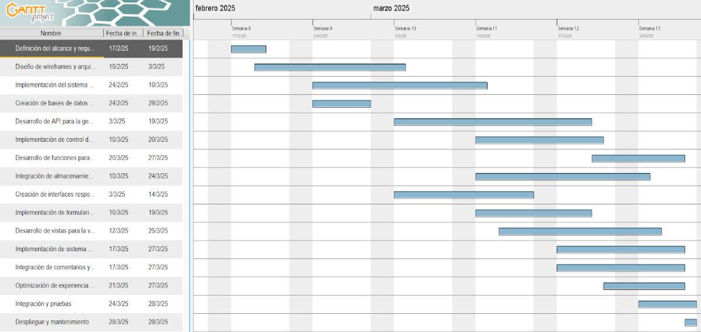

En esta página se detalla la planificación del proyecto, incluyendo las tareas a realizar, la distribución del trabajo y los plazos de entrega.
El desarrollo se dividirá en varias fases con fechas de entrega establecidas.
| Hito | Descripción | Fecha de entrega |
|---|---|---|
| Primer Boceto(Práctica 1) | Entrega de una página web simple | 14 de febrero |
| Diseño de la Base de Datos | Definición y creación de la estructura de datos | 20 de febrero |
| Desarrollo de Gestión de Recetas | Implementación del CRUD para recetas | 1 de marzo |
| Implementación del Sistema de Recomendaciones | Desarrollo del algoritmo de sugerencias | 10 de marzo |
| Arquitectura y Prototipo Funcional(Práctica 2) | Entrega con estructura base y funcionalidad esencial | 7 de marzo |
| Desarrollo de Interacción Social(Práctica 3) | Implementación de valoraciones y comentarios y CSS | 27 de marzo |
| Implementación de Moderación y Control | Gestión de usuarios y eliminación de contenido inapropiado | 5 de abril |
| Desarrollo de Lista de Compras Automáticas | Generación de listas basadas en recetas | 15 de abril |
| Pruebas y Correcciones | Pruebas de integración y solución de errores | 1 de mayo |
| Entrega Final | Versión completa con todas las funcionalidades | 9 de mayo |
A continuación se muestra un diagrama de Gantt representando la planificación:
